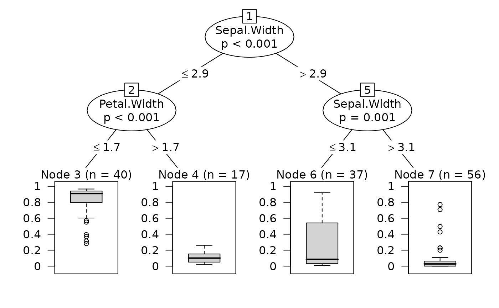

SurrogateTree.RdBuilds a surrogate tree to approximate a conditional random forest model.
SurrogateTree(object, mincriterion = 0.95, maxdepth = 3)An object as returned by cforest (or fastcforest).
the value of the test statistic (for testtype == "Teststatistic"),
or 1 - p-value (for other values of testtype) that
must be exceeded in order to implement a split.
maximum depth of the tree. Default is 3.
A global surrogate model is an interpretable model that is trained to approximate the predictions of a black box model (see Molnar 2019). Here a conditional inference tree is build to approximate the prediction of a conditional inference random forest. Practically, the surrogate tree takes the forest predictions as response and the same predictors as the forest.
The surrogate tree is built using ctree from partykit package.
A list withe following items :
The surrogate tree, of class party
The R squared of a linear regression with random forests prediction as dependent variable and surrogate tree prediction as predictor
Molnar, Christoph. "Interpretable machine learning. A Guide for Making Black Box Models Explainable", 2019. https://christophm.github.io/interpretable-ml-book/.
cforest, ctree
data(iris)
iris2 = iris
iris2$Species = factor(iris$Species == "versicolor")
iris.cf = party::cforest(Species ~ ., data = iris2,
control = party::cforest_unbiased(mtry = 2, ntree = 50))
surro <- SurrogateTree(iris.cf)
surro$r.squared
#> [1] 0.6396917
plot(surro$tree)
